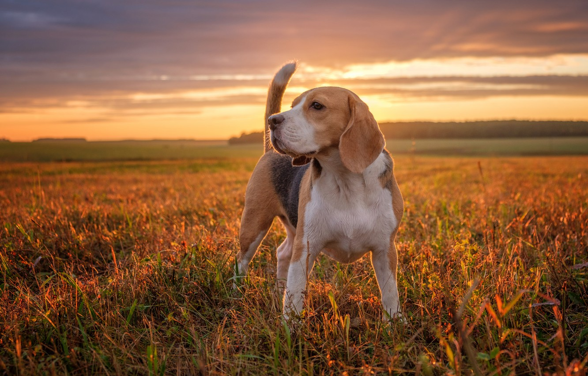
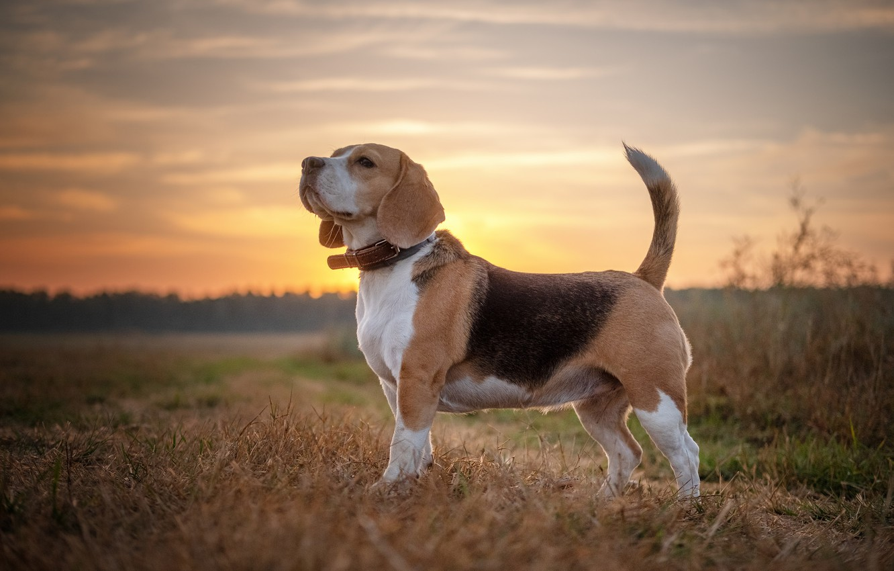

 
Бигль относится к породам собак среднего размера, выведенных для охоты. Согласно классификации FCI порода принадлежит группе гончих маленького размера. Собака этой породы хорошо подходит для содержания в квартире, очень общительна и дружелюбна. Бигль любит бегать и всегда энергичен, поэтому может стать отличным спутником для прогулок на свежем воздухе вместе с хозяином.